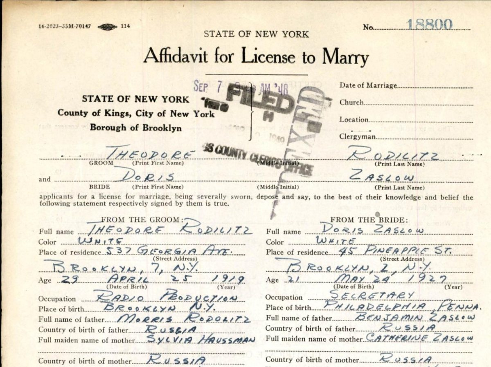

The 1948 marriage licence affidavit of Theodore Rodilitz and Doris Zaslow (upper part).


What it is
NYC marriage licence (affidavit) L-K-1948-0018800: Theodore Rodilitz and Doris Zaslow, Brooklyn, sworn 7 Sep 1948; Doris b. Philadelphia 24 May 1927; Theodore's 1943 marriage annulled, Brooklyn, 23 Dec 1946. NYC Municipal Archives.
Original: a860-historicalvitalrecords.nyc.gov/view/11120633
In the family history: Theodore and Doris
How to cite
NYC marriage licence (affidavit) L-K-1948-0018800: Theodore Rodilitz and Doris Zaslow, Brooklyn, sworn 7 Sep 1948; Doris b. Philadelphia 24 May 1927; Theodore's 1943 marriage annulled, Brooklyn, 23 Dec 1946. NYC Municipal Archives. The Rodilitz and Zaslow Families, compiled by the Koik family.